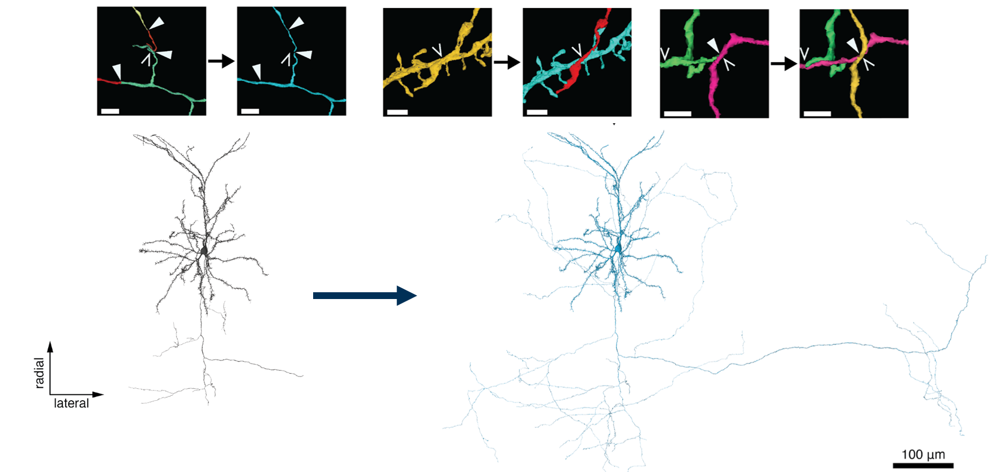
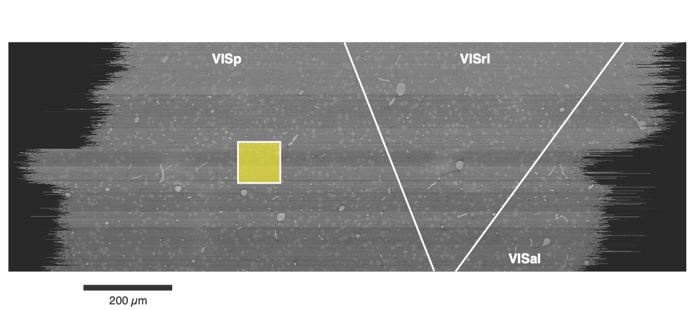
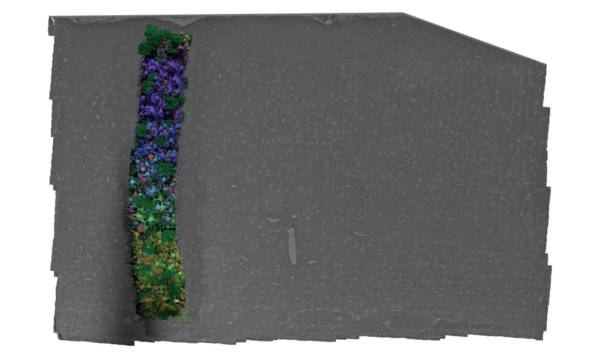

Proofreading and Data Quality
This tutorial has recently been updated to materialization version 1412 (from 1300).
We have released a new public version 1412, as part of our quarterly release schedule. See details at Release Manifests: 1412.
Automated segmentation of neuronal processes in dense EM imaging is challenging at the size of entire neurons, which can have millimeters of axons and dendrites. The automated segmentation algorithms used in the EM data for this project are not perfect, and so proofreading is necessary to correct errors in the segmentation.
However, while automated proofreading methods are starting to appear, in general the proofreading process is time consuming and involves a lot of manual attention. A concerted effort was made to do proofreading on a subset of neurons within the dataset, and so some cells can be understood to be more biologically accurate and complete than others. Some cells in the MICrONs data are thus very well proofread, others are virtually untouched, and many are somewhere in between.
Understanding this variablity in data quality is critical when analyzing the data and interpretting results.
Each kind of cell can be useful, but different approaches must be taken for each.
It is useful to distinguish between two kinds of proofreading errors: splits and merges.
- Split errors occur when a process incorrectly appears to stop in the segmentation, but actually could be continued.
- Merge errors occur when processes from two different neurons are incorrectly merged together.
These two kinds of errors impact analysis differently. While split errors reduce the number of correct synaptic connections, merge errors add incorrect connections.
The frequency of errors is roughly related to the size of the process, and thus axons and dendrites have extremely different error profiles. Because they are thicker, dendrites are largely well-segmented, with only a few split errors and most merge errors being with small axons rather than other dendrites.
Even without proofreading a neuron’s dendrites, we thus expect that most of the input synapses onto the dendrites are correct (since the vast majority of merge errors are with axons that only have output synapses), though some may be missing due to split errors at tips or missing dendritic spines.
In contrast, axons, because they are thinner, have many more errors of both kinds. We thus do not trust axonal connectivity at all without additional proofreading.

Proofreading categories
Proofreading is not an all-or-nothing process. Because of the reasons described above, we distinguish between the proofread status of the axon and the dendrite for each neuron separately. In addition, we consider three levels of proofreading:
- Unproofread: The arbor (dendrite or axon) has not been comprehensively proofread, although edits may have happened here and there.
- Clean: The arbor (dendrite or axon) has been comprehensively proofread to remove all merge errors, but may still have split errors. This means that the synapses that are there are correct, but incomplete.
- Extended: The arbor (dendrite or axon) has been comprehensively proofread to remove all merge and split errors. This means that the synapses that are there are correct and as-complete-as-possible by expert proofreaders. Note that even a well-proofread neuron often has some tips that cannot be followed due to the limitations of the underlying imagery, and of course processes may leave the segmented volume.
The upshot is that unproofread axons are not of a quality suitable for analysis, you can trust the targets of a clean or extended axon because the default dendrite quality is good. However, if your analysis truly demands knowing if a particular neuron is connected to another neuron or not (rather than connecting to a population), the proofreading standards are particularly high and possibly require additional checks.
| Pre Axon Status | Post Dendrite Status | Analyzability |
|---|---|---|
| Unproofread | Unproofread | Not analyzable |
| Unproofread | Clean / Extended | Not analyzable |
| Clean | Unproofread / Clean / Extended | Analyzable but connectivity could be highly biased by limited axonal extent |
| Extended | Unproofread | Analyzable and connectivity is close to complete |
Since a single proofread axon can have many hundreds to ten thousand synaptic outputs, the vast majority onto local dendrites, each single axon provides a tremendous amount of data about that cell’s postsynaptic targets.
Proofreading efforts
There have been several different proofreading efforts in the MICrONS data with different goals and levels of comprehensiveness. Importantly, neurons were not selected for proofreading randomly, but rather chosen based on various criteria. A few of the most signifcant proofreading efforts are described below.
- Excitatory neuron proofreading for functional connectomics. Excitatory neurons in retinotopically matched ares of VISp and RL were proofread to enable functional connectomics analysis, looking for the relationship between functional similarity and synaptic connectivity.
- Martinotti cell proofreading. Extremely extensive reconstructions of several layer 5 Martinotti cells in VISp were performed to enable analysis of the relationship between morphology and transcriptomics.
- Minnie V1 Column. A 100 micron square area of VISp for a comprehensive census of its neuronal population across all layers. Originally, excitatory neurons in this column had dendritic cleaning and extension and inhibitory neurons had comprehensive cleaning and substantail but incomplete extension. However, this population has become a hub for proofreading and cell typing, and will be discussed further in the section below.
The NIH-funded Virtual Observatory of the Cortex (VORTEX) program supports continued proofreading efforts. Supported efforts include proofreading of: of excitatory functionally-coregistered cells, inhibitory neurons, and glial cell types including astrocytes and oligodendrocyte precursor cells.
To learn more about our supported efforts, see: Virtual Observatory of the Cortex on MICrONS Tutorials.
Access our request submission system at:
microns-explorer.org/requests | Scientific Request Form
We are also conducting a community survey. If you are using, have used, or plan to use the MICrONS data, give us some feedback!
Proofreading tables
To keep track of the state of proofreading, the table proofreading_status_and_strategy in the annotation database has a row for each proofread neuron and provides a summary of the proofreading status of the axon and dendrite.
Table name: proofreading_status_and_strategy
The table proofreading_status_and_strategy describes the status of cells that have undergone manual proofreading.
Because of the inherent difference in the difficulty and time required for different kinds of proofreading, we describe the status of axons and dendrites separately.
Each compartment status may be either:
FALSE: indicates no comprehensive proofreading has been performed, or is not applicable.
TRUE: indicates that false merges have been comprehensively removed, and the compartment is at least ‘clean’. Consult thestrategycolumn if completeness of the compartment is relevant to your research.
An axon or dendrite labeled as status=TRUE can be trusted to be correct, but may not be complete. The degree of completion can be read from the strategy column. For more information, please see Proofreading and Data Quality; or also the microns-explorer page on proofreading strategies.
The key columns are:
| Column | Description |
|---|---|
id |
Soma ID for the cell |
pt_position pt_supervoxel_id pt_root_id |
Bound spatial point columns associated with the centroid of the cell nucleus |
valid_id |
The root id of the neuron when it the proofreading assessment was made. NOTE: if this does not match the pt_root_id then the cell has undergone further changes. This is usually and improvement in proofreading, but proceed with caution. |
status_dendrite |
The status of the dendrite proofreading. May be TRUE or FALSE |
status_axon |
The status of the axon proofreading. May be TRUE or FALSE |
strategy_dendrite |
The strategy employed to proofread the dendrite. See strategy table below for details |
strategy_axon |
The strategy employed to proofread the axon. See strategy table below for details |
The specific strategies are as follows (and will update over time):
Proofreading Strategies
| Strategy | Description |
|---|---|
none |
No cleaning, and no extension. Indicates an entry in proofreading_status that is FALSE for that compartment |
dendrite_clean |
The dendrite had incorrectly-merged axon and dendritic segments comprehensively removed, meaning the input synapses are accurate. The dendrite may be incorrectly truncated by segmentation error. Not all dendrite tips have been checked for extension. No comprehensive attempt was made to re-attach spine heads. |
dendrite_extended |
The dendrite had incorrectly-merged axon and dendritic segments comprehensively removed, meaning the input synapses are accurate. Every tip was identified, manually inspected, and extended if possible. No comprehensive attempt was made to re-attach spine heads. |
axon_column_truncated |
AThe axon was extended within the V1 cortical column, with a preference for local connections. In some cases the axon was cut at the column boundary and/or the layer boundary, especially the boundary between layers 2/3 and layer 4. Output synapses represent a sampling of potential partners |
axon_interareal |
The axon was extended with a preference for branches that projected to other brain areas. Some axon branches were fully extended, but local connections may be incomplete. Output synapses represent a sampling of potential partners. |
axon_partially_extended |
The axon was extended outward from the soma, following each branch to its termination. Output synapses represent a sampling of potential partners. |
axon_fully_extended |
Axon was extended outward from the soma, following each branch to its termination. After initial extension, every endpoint was identified, manually inspected, and extended again if possible. Output synapses represent a largely complete sampling of partners. |
This table, proofreading_status_and_strategy, supercedes proofreading_status_public_release.
# Standard query
client.materialize.query_table('proofreading_status_and_strategy')
# Content-aware query
client.materialize.tables.proofreading_status_and_strategy(status_axon='t').query()Minnie Column
The Minnie Column is a collection of more than 1,300 neurons whose nucleus centroid fell within a 100 x 100 micron square (viewed from the top) and extending across all layers.


This was originally considered a region of interest for “Inhibitory specificity from a connectomic census of mouse visual cortex” (Schneider-Mizell et al. 2025), and thus all neurons in this region were proofread to some extent and manually evaulated.
All excitatory neurons had their dendrites cleaned and extended to assess dendritic morphology and synaptic inputs, while inhibitory neurons had both their dendrites cleaned and extended, and then their axons were extensively cleaned and extended to capture their targeting properties. Efforts were made to extend inhibitory axons to every major region of their arbor, but not every individual tip was followed and the resulting analysis focused on population-level connectivity rather than individual connections.
Morphological and connectivity-based cell typing was performed on these cells in terms of both classical and novel categories, and considerable expert attention ensured that the baseline data quality was high. Cell type results can be found in several of the cell type tables available. These cell types were used for training the various whole-dataset cell typing classifiers.
In addition, the proofreading and multiple levels of cell typing applied to this dense and diverse population has made it a useful reference, and spawned further analysis. Subsequent work has cleaned many of the excitatory axons from layers 2–5, albeit to a variety of degrees of extension.